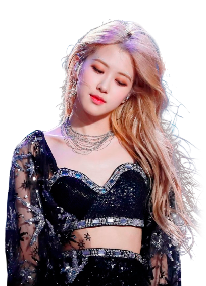

← INTEGRANTES / 01Rosé
Rosé
Park
Una voz inconfundible. Rosé combina sensibilidad, fuerza y una conexión especial con la música. Su debut en solitario llegó con «On The Ground» en 2021.
BLACKPINK / ROSÉ

DETRÁS DEL ESCENARIO
Conoce a Rosé.
Una voz inconfundible. Rosé combina sensibilidad, fuerza y una conexión especial con la música. Su debut en solitario llegó con «On The Ground» en 2021.
- Nombre
- Roseanne Park
- Nombre artístico
- Rosé
- Nacimiento
- 11 de febrero de 1997
- Grupo
- BLACKPINK